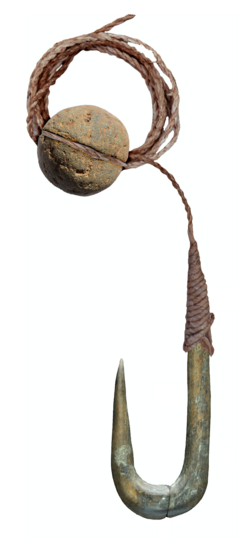
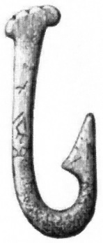
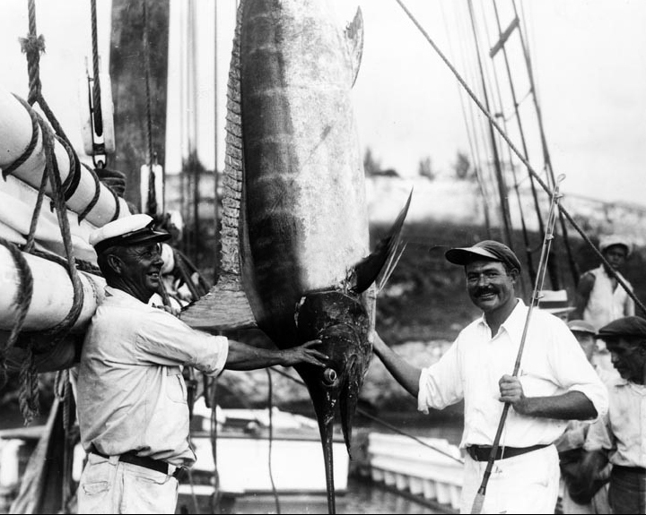

Sejarah Memancing
Menelusuri jejak evolusi aktivitas memancing dari zaman prasejarah hingga menjadi olahraga rekreasi modern.
SEJARAH
Memancing adalah salah satu kegiatan yang sudah ada sejak zaman prasejarah dan terus berkembang seiring berjalannya waktu. Pada masa awal, manusia purba menggunakan alat yang sangat sederhana, seperti batu atau batang kayu, untuk menangkap ikan di sungai atau laut. Kegiatan ini sangat vital untuk bertahan hidup sebagai sumber makanan utama. Beberapa bukti arkeologis menunjukkan bahwa manusia purba telah menggunakan alat pancing sejak 40.000 tahun yang lalu, menandakan bahwa memancing merupakan salah satu cara utama untuk memperoleh makanan pada masa itu.
Pada peradaban Mesir Kuno, memancing mulai berkembang lebih jauh. Masyarakat Mesir menggunakan alat pancing yang terbuat dari bahan-bahan alami seperti tulang, kayu, dan logam. Selain itu, mereka juga mulai menggunakan teknik yang lebih efisien, seperti jaring dan perangkap ikan, yang memungkinkan mereka menangkap lebih banyak ikan dalam waktu yang lebih singkat. Memancing bukan hanya menjadi kegiatan untuk memenuhi kebutuhan pribadi, tetapi juga berperan dalam perdagangan, yang menjadi bagian penting dari ekonomi masyarakat Mesir kuno.


Di Yunani dan Romawi Kuno, memancing menjadi kegiatan yang lebih beragam, baik untuk kebutuhan rekreasi maupun komersial. Masyarakat pada masa itu mulai menggunakan alat pancing yang lebih canggih, seperti kail yang lebih kuat dan umpan yang lebih efektif. Selain untuk mencari makanan, memancing menjadi kegiatan sosial dan hiburan yang digemari kalangan atas, bahkan banyak karya sastra Yunani yang menggambarkan kegiatan memancing sebagai bagian dari kehidupan yang memiliki nilai estetika. Teknik-teknik memancing pada masa ini juga semakin berkembang, dengan penemuan alat pancing yang lebih efisien.
Pada abad pertengahan, kegiatan memancing semakin menyebar di Eropa. Di era ini, memancing tidak hanya dilakukan untuk mencari ikan sebagai sumber pangan, tetapi juga untuk tujuan rekreasi, terutama di kalangan bangsawan. Penggunaan jaring dan alat pancing semakin berkembang, memungkinkan hasil tangkapan yang lebih melimpah. Selain itu, pada masa ini muncul pula pemisahan antara memancing untuk keperluan konsumsi pribadi dan memancing untuk tujuan komersial, yang mulai menjadi industri kecil di beberapa wilayah.
Memasuki Revolusi Industri pada abad ke-18 dan ke-19, produksi alat pancing menjadi lebih efisien dan terjangkau. Hal ini membuat kegiatan memancing semakin populer di kalangan masyarakat umum. Teknologi yang semakin maju, termasuk penggunaan kapal pemancing canggih dan sonar untuk menemukan lokasi ikan, mengubah cara orang memancing. Pada abad ke-20, memancing berkembang menjadi hobi yang sangat digemari oleh berbagai kalangan, dengan munculnya berbagai turnamen dan komunitas pemancing. Kini, memancing tidak hanya menjadi cara untuk mencari ikan, tetapi juga merupakan bagian dari industri rekreasi global yang memiliki dampak sosial dan ekonomi yang signifikan.
